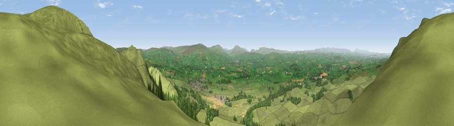

Viewpoint near Brough
#3775 in England · top 6% of its area beats it · near BroughThe view, rendered

A 360° render of this exact spot computed from the terrain model, tree cover and land cover — summer colours, afternoon light, calibrated against photographs of famous viewpoints. Real trees, hedges and buildings will differ in detail.
The panorama
Grey silhouette: terrain skyline in each direction (720 bearings, Earth curvature and refraction included). Dashed green: skyline with trees (+15 m) and buildings (+8 m) as obstacles. Blue strip: how far the ground is visible on each bearing.
Where the view opens
Wedge length = distance to the farthest visible ground on that bearing (vegetation-aware). Rings at 10, 25 and 50 km.
What fills the view
78% grassland · 20% woodland · 1% cropland ·
Angular shares of the visible panorama (visual magnitude), not map area. Landscape diversity 0.27 (0–1 Shannon).
Key numbers
More beautiful places nearby
The staircase of upgrades: each row has a higher view potential than everything closer. Driving times are estimates from straight-line distance, calibrated against real road routing — check an actual route before setting out.
| Place | Direction | Drive | Score |
|---|---|---|---|
| Viewpoint near Hilton | NNW · 3 km | ~6 min | 73.7 |
| Viewpoint near Hilton | NW · 5 km | ~10 min | 75.2 |
| Viewpoint c10485_7606 | NNE · 8 km | ~15 min | 75.6 |
| Mickle Fell | NNE · 8 km | ~16 min | 75.8 |
| Viewpoint c10024_7603 | S · 16 km | ~28 min | 76.9 |
| Great Dun Fell | NNW · 17 km | ~30 min | 77.8 |
| Little Dun Fell | NNW · 18 km | ~31 min | 78.4 |
| Cross Fell | NNW · 20 km | ~34 min | 78.7 |
54.54677, -2.33658 · source: screening · position refined by local search. Computed location — check access rights before visiting.